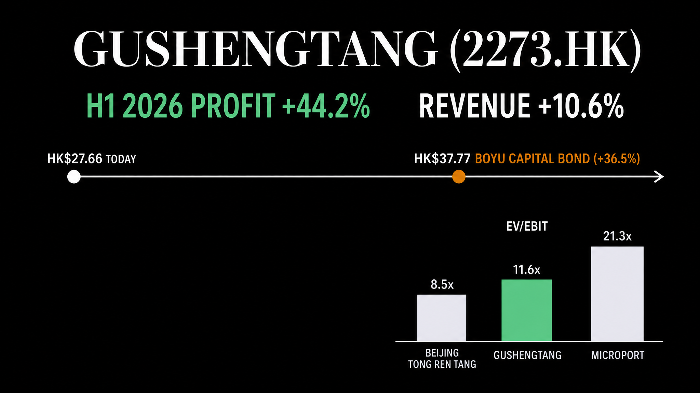

Gushengtang's first-half 2026 net profit grew 44.2% year on year to RMB 219.2 million. Revenue rose 10.6% to RMB 1,652.9 million, a sharp reacceleration from the 7.5% revenue growth the company posted for all of FY2025. At HK$27.66, the stock trades at 12.8 times earnings and 11.6 times operating profit. In January 2026, private equity firm Boyu Capital priced a US$110 million convertible bond in the company at a conversion price of HK$37.77, 36.5% above today's price. The stock has not caught up to either number yet.

Gushengtang trades at HK$27.66 today, more than a fifth below where Boyu Capital priced its convertible bond in January and below where most sell-side analysts expect it to go.
The company's first-half profit grew 44.2% and revenue 10.6%, both accelerating from the year before. The stock price says investors do not believe the growth will last. The accounts, filed August 28, say it already has.
What Gushengtang Does
Gushengtang runs 101 traditional Chinese medicine clinics across mainland China plus 15 in Singapore, more than any other private operator in the country. Patients pay out of pocket for consultations and herbal treatment from licensed physicians, a business that carries almost no factory or hospital-grade fixed cost. Physicians make up 61% of the 3,551-person workforce. In 2025 the company launched an AI tool trained to replicate the diagnostic style of its senior doctors. It is a way of scaling a practice that has traditionally depended on one physician's reputation at a time.
Revenue has grown from RMB 1.4 billion in 2021 to RMB 3.25 billion in 2025. That run includes two years above 30% growth, before slowing sharply to 7.5% last year. Gross margin sits at 31.2%, up from 30.1% the year before.
Free cash flow reached RMB 494 million in 2025, and the company converts profit into cash reliably. Its return on capital and its free-cash-flow return on capital sit within a point of each other, at roughly 17.6% and 17.4%.
| FY2025 Revenue | RMB 3.25B +7.5% |
| H1 2026 Revenue | RMB 1.65B +10.6% |
| H1 2026 Net Profit | RMB 219.2M +44.2% |
| FY2025 Free Cash Flow | RMB 494M |
| Gross Margin | 31.2% |
| Return on Capital | 17.6% |
| H1 2026 Buybacks | HK$360M 51 tranches |
| Market Cap / Price | HK$6.1B / 27.66 |
| Beijing Tong Ren Tang (TCM, manufacturing) | 8.5× |
| WuXi AppTec (CRO) | 9.4× |
| Gushengtang (2273.HK) | 11.6× |
| MicroPort NeuroScientific | 21.3× |
Source: company FY2025 annual results and H1 2026 interim · peer multiples Sept 2026. No pure TCM-clinic peer trades on HKEX; nearest comps are a TCM manufacturer and medical-device/CRO names, not a matched peer group.
Why the Market Hasn't Re-Rated the Stock
FY2025 is the reason. Revenue grew 43.0% in 2023 and 30.1% in 2024, then fell to 7.5% in 2025. A clinic operator that had compounded at 30%-plus for two straight years slowed to single digits, and the stock re-rated down. This market has not handed back a full-size position on one quarter of reacceleration, even a 44% one.
An August 28 filing separated the H1 2026 numbers from the FY2025 slowdown. Offline clinic revenue, the core of the business, grew 12.5% year on year, and same-store sales, existing clinics rather than new ones, accounted for 97.3% of that growth. Existing clinics, not new openings, drove the growth.
What Just Happened: Three Signals
Three things converged between January and August 2026.
- 01A private-equity investor priced the stock 36.5% higher, in writing. On January 26, 2026, Gushengtang signed a US$110 million, five-year convertible bond with an investment vehicle of Boyu Capital, a private equity firm. The conversion price is HK$37.77, at a 2% coupon. That price was a 22% premium to the stock when the deal was signed. Against today's HK$27.66 it is a 36.5% premium. Boyu does not profit unless the stock gets there.
- 02The company is buying back stock faster than it is paying dividends. In the first half of 2026 alone, Gushengtang ran 51 separate buybacks totaling HK$360 million for 13.2 million shares. Its board approved a further HK$300 million on top of an existing mandate. Combined with the declared interim and final dividends, the payout for the half already totals roughly RMB 658 million. That is more than the entire RMB 494 million of free cash flow the company generated in all of 2025. The bond's proceeds are covering the gap, a choice management is making with new capital, not a sign the underlying cash generation has weakened.
- 03The company went shopping, four times, including its first deal outside China and Singapore. Between March and August 2026, Gushengtang announced four separate acquisitions. One was a majority stake in a Jinan clinic operator. Another covered two Singapore and Tianjin targets in a single June filing. A third added two Beijing-area hospitals in July. The fourth, in August, was three Malaysian TCM clinics, its first move into a country where it has never operated. That pace is new: the company's own annual report, published in April, said no material acquisition was planned.
Valuation
At HK$27.66, Gushengtang trades at 12.8 times trailing earnings. It trades at 11.6 times operating profit, a measure known as EV/EBIT: what the market pays for the underlying business after stripping out cash and debt. No other pure TCM clinic operator trades on the Hong Kong exchange, so there is no clean like-for-like comparison. Beijing Tong Ren Tang's Chinese medicine arm, the nearest public reference, trades at 8.5 times, but it is a slower-growing manufacturer, not a clinic network expanding same-store sales at double digits. WuXi AppTec, a contract research organization, trades at 9.4 times. MicroPort NeuroScientific, a medical-device maker, trades at 21.3 times. None of the three is a clean peer, and the spread between them, roughly 8.5 to 21 times for HKEX healthcare names with different growth and margin profiles, is wide enough that 11.6 times reads as reasonable rather than obviously cheap or expensive on multiple alone.
Seventeen analysts covering the stock carry an average price target of HK$39.87, according to public consensus data as of September 2026, with estimates ranging from HK$25.07 to HK$59.61. That average sits close to Boyu Capital's HK$37.77 conversion price, independently arrived at by an analyst consensus and a private-equity bond investor. Neither is today's HK$27.66.
Two Risks That Would Break This
Risk 1: the capital-return math is running ahead of organic cash flow
Buybacks and dividends in the first half of 2026 already total more than all of 2025's free cash flow. That is sustainable only because the January convertible bond supplied roughly RMB 735 million in fresh proceeds. Four new acquisitions and the ongoing buyback program still need funding from clinic cash flow once that bond money runs out. The next balance sheet, due with the FY2026 annual report, would need to show net cash holding up on its own. If it instead turns materially negative without a matching jump in earnings, the thesis that this is a self-funding, capital-light business would need re-examining. It has not happened yet. Net cash today is a modest RMB 45 million, a small buffer relative to a HK$6.1 billion market value, worth watching rather than ignoring.
Risk 2: the H1 2026 reacceleration has to hold through a second half
One strong half does not undo one weak year. FY2025's 7.5% growth followed two years above 30%. The market's caution is a reasonable response to that pattern, not an overreaction to nothing. Two things would weaken the re-rating case. H2 2026 growth relapsing toward last year's pace is one. The other is the FY2026 annual report showing the reacceleration was a soft comparison against a weak H1 2025, not a durable trend.
One operational point sits alongside both. Nearly all of Gushengtang's revenue is denominated in yuan against a Hong Kong dollar listing, with no disclosed currency hedge. The company's first-ever foreign acquisition, in Malaysia, also enters a licensing and regulatory regime it has no track record in. Neither is new to a China-based HKEX listing, but the Malaysia deal is a genuinely untested variable, not a repeat of what the company has already done in Singapore.
The same idea, an informed private investor pricing a business ahead of the public market, shows up elsewhere on HKEX. See AstraZeneca Paid US$100M for One Molecule. The Rest Trades at US$507M., on a pre-profit biotech rather than a cash-generating clinic network.
The Decision
Written at HK$27.66 on September 24, 2026.
The fundamentals and the market price are telling two different stories right now, and both are reading real data. Revenue and profit reaccelerated in the first half. Boyu Capital priced a multi-year bond well above today's stock, and the buyback program is large relative to the company's size. Against that, a full year of slowing growth is recent enough that the market has not yet handed back the multiple it took away.
This analysis does not produce a buy signal or a sell signal. What it produces is a price, HK$37.77, where the market would be agreeing with Boyu Capital instead of pricing the stock well below what its own bond investor paid.
| Scenario | Trigger | What It Would Mean |
|---|---|---|
| Bull | FY2026 annual report confirms the H1 growth rate held through H2 | Re-rating case strengthens, toward Boyu's HK$37.77 and the HK$39.87 consensus |
| Neutral | H2 2026 growth data not yet reported | Thesis intact pending the FY2026 annual report |
| Bear | FY2026 results show growth relapsing toward FY2025's 7.5% pace, or net cash turns materially negative without an earnings offset | Re-rating case weakens; thesis invalidated |
Two signals would invalidate the case. An FY2026 print showing the reacceleration did not survive a second half. Or a net cash position turning meaningfully negative without a matching rise in earnings. Neither has happened yet. Boyu Capital is still waiting on the same number the market is.
Sources
- Gushengtang Holdings: HKEXnews filings, 2026
- Gushengtang FY2025 Annual Report, filed April 29, 2026
- Interim Results Announcement for the six months ended June 30, 2026, filed August 28, 2026
- Proposed Issue of Convertible Bonds Under General Mandate, US$110 million agreement with an investment vehicle of Boyu Capital, HKEXnews announcement, January 26, 2026
- Analyst consensus price targets: public analyst estimate aggregation, September 2026
- Peer EV/EBIT multiples: company filings and public market data, September 2026